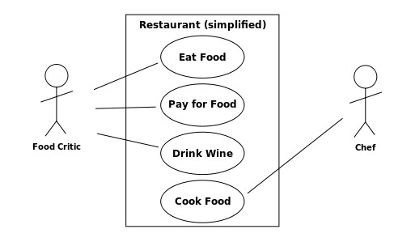
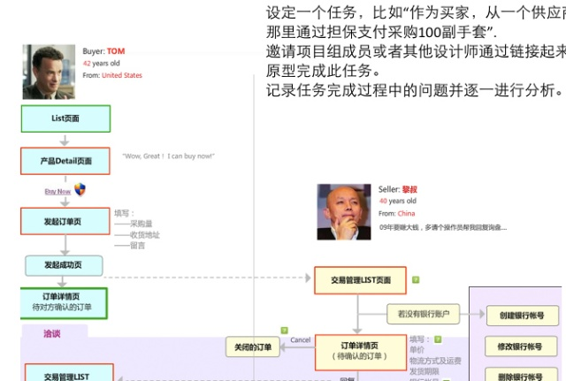

注:这是以前在1号店运营实习时做的一次内部邮件分享。后面本来还编了两个具体使用用户故事来挖掘真实需求的小例子，因为主要是针对那个平台的内容，所以这里暂时删掉了，之后考虑再做两个比较通用的例子。
在软件开发领域，常常采用用例（Use Case，如图1）或者用户故事（User Story）来描述某种场景下用户与软件产品之间的互动关系以及用户在使用产品时可能体验到的流程，从而推导出相应的产品功能需求。前者更关注宏观上的不同场景，而后者侧重于塑造一个特征具体的、有群体代表性的虚拟用户在使用产品时发生的故事流程（或根本就是某个真实用户的真实经历）。

图1：一个餐馆的简单用例图（图片来源：Wikipedia「用例」词条）
原图 Kishorekumar 62 绘，Marcel Douwe Dekker 重绘，见 Wikimedia Commons，CC BY-SA 3.0。

依我个人看来，用例的方法更适合用于场景多、用户角色多、功能更具广度的产品上，比如我们的后台系统涉及到不同部门、分管不同业务的人员，而一个人员往往需要用到多种功能并通过这些功能与其他人员相联系，这时要描述清楚每个角色与系统的交互，用例图就非常实用。
而用户故事则适用于用户目的相对单一，操作流程分叉相对较少的系统，比如我们的团购网站前台，用户的最终目的就是购买商品。核心步骤只有三步：浏览页面->将商品放入购物车->支付。但是不是这样的系统就没有必要再进行分析了呢？答案当然是否定的。一个电商平台的运转是否健康向上，是否能支持好的用户体验，重要的不在于功能是否丰富，而在于平台提供的功能是否能够很好地促进用户在几个关键步骤上的转化。UV、转化率等数据能帮助我们量化系统运转的结果，但并不能得到原因，更进一步也就不能得到改进的方法。
系统运转结果好坏最根本的原因是什么？是用户的需求是否得到满足。而用户的需求来源于用户个人的属性：性别、年龄、性格、爱好、阅历等等，这些属性驱动了用户的需求与行为。从这里我们可以看出CRM是多么重要的一块。但是当我们还没有这么充分的用户数据及用户分析时，我们该如何去了解他们呢？用户故事就是一个非常好的方法。
其实我们人人都会用户故事这个方法。我们常常说，“如果是我，会觉得这个活动太没意思”或者“要是让我母亲大人来操作，她肯定找不着方向”。要讲一个好故事，我们也许得做几件事情：
1.弄清我们的主人公是谁，他有哪些属性，这些属性会使他具有怎样的行为倾向；
2.故事发生在怎样一个场景，场景有哪些特点和限制；
3.使用拿手的叙述方式：可以什么都不借助，就用语言文字，也可以画一个像电影脚本的故事图（如果你绘画能力够强），甚至结合一些更为系统的流程图（如图2）。

图2：用户故事图的一个例子（图片来源：heidixie《交互设计那些事儿》）